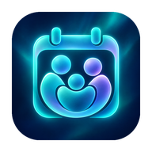

FamilyNexus: Release Notes
1.2.2 (27) → 1.2.3 (31) Stand: 21. November 2026Stand: 21. November 2026
Bitte alle Geräte der Familie aktualisieren. Wer einen Termin mit einer älteren App-Version bearbeitet, verliert dessen Kalender-Thema.
Neu
Kalender
- Kalender-Themen: Moderatoren legen Themen mit Name und Farbe an. Jedes Mitglied wählt eines für den eigenen geteilten Termin.
- Jahresfortschritt: Der Kalender zeigt, wie weit das Jahr ist (Tag, verbleibende Tage, Prozent und Balken).
- Geburts- und Gedenktage: Personen mit Geburts- und Todesdatum, mit Vorlaufzeit, Symbol und Jahreszahl. Die Geburtstagsliste ordnet streng nach dem nächsten Vorkommen.
- Abgleich alle 15 Minuten: Der Kalender gleicht zusätzlich regelmäßig mit dem Server ab.
Chat
- Gesprächsliste: Familienchat und Einzelchats stehen in einer Liste, sobald es Einzelchats gibt.
- Ungelesene zuerst und die Einstellung „Letztes Gespräch wieder öffnen“.
- Zustellstatus: „Sendet“, „Gesendet“ und „Gelesen“. Über einen Schalter lässt sich die Lesebestätigung ein- und ausschalten.
Familie und Profil
- Zwölf eingebaute Avatare: In bestehenden Familien lassen sie sich wählen, sobald ein Moderator die App geöffnet hat. Der Avatar erscheint in Familie, Chat, Gesprächsliste, Kalender und Heute.
- Anordnung der Bereiche: Aufgaben sind ein eigener Tab, Familie liegt im Menü.
Einrichtung und Anmeldung
- Einführungstour in Kalender, Chat und Einkauf: einmalig, überspringbar, in den Einstellungen wiederholbar.
- Anbieter wählen ist ein eigener Schritt vor „Konto erstellen“ und „Anmelden“.
- Anmeldung und Anbieterseiten öffnen in einer eingebetteten Ansicht der App. Die Symbole passen zur Plattform, ein Abbruch beim Anbieter erscheint als Hinweis.
- Hinweis bei beendeter Sitzung: Beendet der Server die Sitzung, sagt die App das jetzt.
Einstellungen
- App teilen kopiert den Link zum Store-Eintrag, App bewerten öffnet ihn (Android).
- App-Sperre lässt sich auch ohne gesicherte Gerätesperre aus- und wieder entsperren.
- Datenübersicht: keine Raum-IDs mehr; bei Einzelchats steht online der Name der Gegenseite.
Sicherheit
- Die Identitätsvermerke der Familienmitglieder liegen zusätzlich verschlüsselt auf dem Gerät. Ändert der Server einen Schlüssel, fällt das auf. Ein Kontowechsel verwirft den Bestand des alten Kontos.
Verbessert
- Das Ladebild beim Start folgt der Darstellung des Geräts. Auf macOS erscheint beim Kaltstart die Startfarbe statt eines schwarzen Rahmens.
- Seitenübergänge haben einen deckenden Hintergrund, beim Wischen scheint nichts mehr durch.
- Die Statusleiste zeigt auf hellem Design dunkle Symbole.
- Im Querformat mit Tastatur läuft der Chat nicht mehr über; Kopfzeile und Hinweis weichen bei knapper Höhe.
- „Heute“: Die Karte „Keine Erinnerung geplant“ entfällt, solange Erinnerungen fällig sind.
- Das Terminformular zeigt bei großer Schrift die Beschriftung über Datum und Uhrzeit.
- Die Gesprächsliste zeigt das Datum mit führender Null; Monatszellen lesen Screenreadern das volle Datum in der App-Sprache vor.
- Einladungslinks: Ein eingetragener Servername ohne Port gilt wie ein leeres Feld. Ein Heimnetz-Server mit anderem Port gilt als eigener Konto-Server.
- Die Texte nennen Meldungen nur bei geöffneter App; auf Mobilgeräten sind sie im Hintergrund nicht zugesagt. „Link kopiert“ ersetzt den alten Hinweis beim Teilen.
Behoben
- Der Avatar-Bildschirm schließt nach dem Speichern, nur seine eigene Route, nicht einen Dialog darüber.
- Avatar entfernter Mitglieder: Buchstabe aus dem Nachrichtennamen statt Fragezeichen.
- „Passwort ändern“ schließt den Dialog nach der eingebetteten Kontoseite über die eigene Route.
- „Ausweg“ und „Fertig“ gleichzeitig lösen weder Fehler noch Fehlerbanner aus.
- Abmelden und Kontowechsel lassen Blockierliste und vorgemerkten Link nicht mehr stehen.
- Der Sync meldet das Konto nicht mehr als offline, wenn der Online-Status geteilt wird.
- „Termin löschen“ meldet Fehler als Löschfehler statt als Speicherfehler; Ablagefehler beim Speichern eines Termins erscheinen im Editor.
- Einrichtung: Speicherfehler am Ende werden angezeigt und erlauben einen neuen Versuch.
- Chat: Das Eingabefeld leert sich nach dem Senden nur, wenn Text und Antwort unverändert sind.
- Browser-Anmeldung: Die Sitzung gilt, wenn nur ein Folgeschritt scheitert.
- Anhang-Download mit Zeitschranke am Datenstrom; unerwartete Fehler beim Senden zählen als Fehlversuch und werden protokolliert.
- Aufgabenprotokoll: Die Rechte werden beim Empfang vor dem Speichern geprüft.
- Das Feld „Familienname“ zählt dieselben Zeichen wie die Prüfung.
- iOS und macOS: Der WebView-Datenspeicher wird vollständig gelöscht.
Datenschutz
Die Datenschutzerklärung nennt die sichtbare Avatar-Wahl und trägt das Änderungsdatum 15. November 2026.
Stand
Diese Notizen fassen die Änderungen im Quelltext von Build 27 (1.2.2) bis zum Build 31 (1.2.3) zusammen, einschließlich Korrekturen nach dem Versionsvermerk von Build 31 (bis #556).